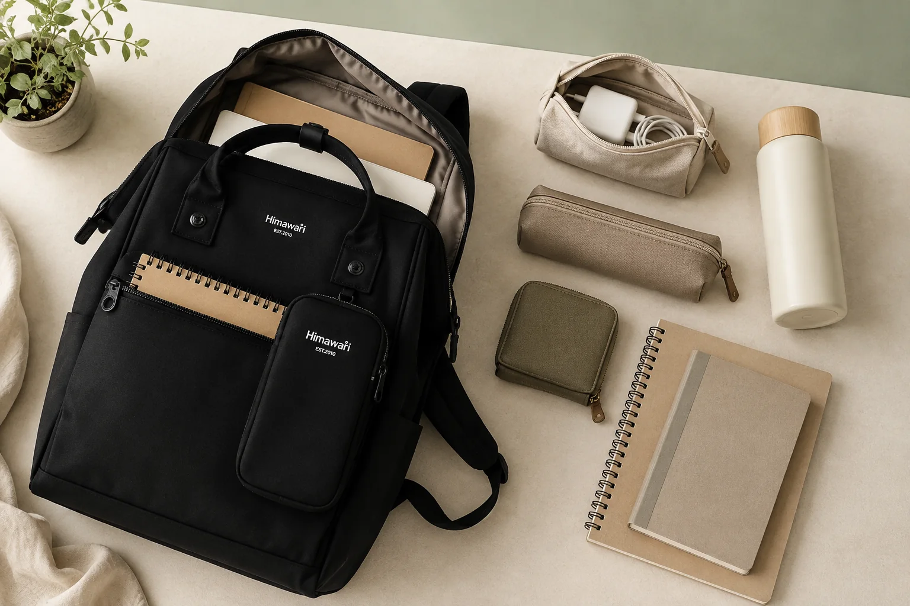

백팩 수납칸은 많을수록 좋을까? 내 짐에 맞는 구조 고르기

제품 설명에서 ‘다양한 수납공간’이라는 문구를 보면 포켓이 많을수록 정리가 쉬울 것 같지만, 실제 편의성은 개수보다 위치와 크기에 달려 있습니다. 작은 포켓이 많아도 내가 가진 물건과 맞지 않으면 빈 채로 남고, 오히려 어디에 넣었는지 찾는 시간이 길어질 수 있습니다. 구매 전에는 포켓 수를 세기보다 하루의 짐을 꺼내는 장면을 떠올려보세요.
1. 평소 짐을 네 가지 역할로 나누세요
먼저 매일 들고 다니는 물건을 큰 물건, 자주 꺼내는 물건, 충격이나 눌림을 피할 물건, 새거나 묻을 수 있는 물건으로 나눕니다. 노트북과 A4 파일은 큰 물건, 교통카드와 이어폰은 자주 꺼내는 물건, 안경과 전자기기는 보호가 필요한 물건, 물병과 간식은 분리할 물건에 해당합니다. 이렇게 나누면 필요한 포켓의 역할이 자연스럽게 보입니다.
2. 메인 수납칸은 ‘많이 담기’와 ‘분리하기’ 중에서 고르세요
넓은 한 칸 구조는 부피가 다른 책, 옷과 파우치를 유연하게 담기 좋습니다. 반면 두 개의 큰 수납칸은 서류·전자기기와 생활용품을 나누기 편하지만 각 칸의 실제 폭이 줄어들 수 있습니다. 어느 쪽이 더 좋다고 단정하기보다 가장 큰 소지품이 입구를 통과하는지, 칸을 나눈 뒤에도 지퍼가 무리 없이 닫히는지 확인하세요.
노트북을 휴대한다면 화면 크기만 보지 말고 노트북 수납칸의 실제 치수와 바닥 여유도 함께 점검해야 합니다.
3. 자주 쓰는 물건은 손이 닿는 높이에 두세요
휴대전화, 카드지갑, 손수건처럼 이동 중 자주 쓰는 물건은 가방 전체를 열지 않고 닿는 포켓이 편합니다. 다만 외부 포켓은 이동 환경과 잠금 방식도 살펴야 합니다. 소지품이 입구 밖으로 나오지 않는 깊이인지, 지퍼를 닫았을 때 끈이나 옷자락에 걸리지 않는지 확인하세요.
4. 작은 물건은 포켓보다 파우치가 나을 때도 있습니다
충전기, 케이블, 위생용품처럼 함께 쓰는 물건은 고정 포켓 여러 곳에 흩어두기보다 하나의 파우치로 묶는 편이 가방을 바꿀 때도 편합니다. 고정 포켓은 카드지갑이나 열쇠처럼 늘 같은 자리에 둘 물건에 사용하고, 구성 자체가 자주 달라지는 물건은 이동식 파우치로 묶어보세요. 충전기·케이블 수납법도 이 원칙을 자세히 설명합니다.
5. 물병과 오염 가능 물품은 다른 짐과 거리를 두세요
물병 포켓은 병의 지름과 높이가 맞고 이동 중 흔들림이 지나치지 않는지 확인합니다. 내부 포켓이라면 노트북이나 서류와 바로 맞닿지 않는 배치가 좋습니다. 화장품, 간식과 우산도 별도 파우치나 방수 주머니를 활용하면 다른 물건으로 번지는 상황을 줄일 수 있습니다.
6. 빈 가방이 아니라 실제 짐을 넣은 상태로 비교하세요
매장에서 확인하거나 구매 후 첫 점검을 할 때는 평소 짐과 비슷한 부피를 넣어봅니다. 가방이 앞으로 불룩해지는지, 작은 포켓 때문에 큰 물건이 밀리는지, 어깨끈을 멨을 때 무게가 한쪽으로 쏠리는지 살펴보세요. 짐을 넣은 뒤의 어깨끈 맞춤은 백팩 어깨끈 조절 5단계를 참고할 수 있습니다.
구매 전 수납 구조 체크리스트
- 가장 큰 노트북·파일·교재가 입구를 통과하나요?
- 매일 쓰는 물건마다 기억하기 쉬운 자리가 있나요?
- 물병과 전자기기를 분리할 수 있나요?
- 열쇠나 충전기가 다른 물건을 누르지 않나요?
- 쓰지 않을 작은 포켓 때문에 내부 공간이 줄지 않나요?
- 실제 짐을 넣어도 지퍼가 자연스럽게 닫히나요?
수납칸이 좋은 백팩은 포켓이 가장 많은 가방이 아니라, 내 물건이 매일 같은 자리를 찾을 수 있는 가방입니다. 짐 목록이 아직 정리되지 않았다면 매일 짐을 줄이는 수납 루틴부터 시작해 보세요. 여러 모델의 구조는 Himawari 가방 찾기에서 용도별로 비교할 수 있습니다.
참고·안내
- Himawari No.1027 제품 정보
- 용도별 Himawari 가방 찾기
- 대표 이미지는 Himawari No.1027 제품 사진을 참조해 만든 연출 이미지입니다. 실제 내부 구조는 제품 상세 정보를 확인해 주세요.
자주 묻는 질문
백팩은 포켓이 많을수록 정리하기 쉬운가요?
포켓 수보다 자주 쓰는 물건의 크기와 꺼내는 순서에 맞는 위치가 중요합니다. 비슷한 작은 포켓이 지나치게 많으면 물건의 위치를 기억하기 어려울 수 있습니다.
메인 수납칸은 하나와 둘 중 어느 쪽이 좋은가요?
책이나 옷처럼 큰 물건을 한 번에 담는다면 넓은 한 칸이 편하고, 노트북·서류와 생활용품을 확실히 나누려면 두 칸 구조가 편할 수 있습니다. 평소 짐을 기준으로 선택하세요.
가방을 사기 전에 수납 구조를 어떻게 확인하나요?
평소 소지품을 바닥에 펼쳐 큰 물건, 자주 쓰는 물건, 새기 쉬운 물건으로 나눈 뒤 제품 상세 사진의 입구 크기와 포켓 위치를 대조해 보세요.